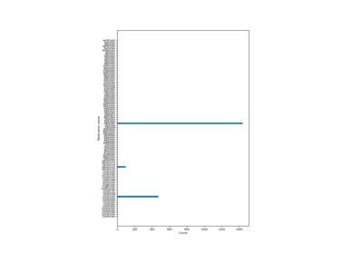

skrub.datasets.make_deduplication_data¶
- skrub.datasets.make_deduplication_data(examples, entries_per_example, prob_mistake_per_letter, random_state=None)[source]¶
Duplicates examples with spelling mistakes.
Characters are misspelled with probability prob_mistake_per_letter.
- Parameters:
- exampleslist of str
Examples to duplicate
- entries_per_examplelist of int
Number of duplications per example
- prob_mistake_per_letterfloat in [0, 1]
Probability of misspelling a character in duplications
- random_stateint,
RandomStateinstance, optional Determines random number generation for dataset noise. Pass an int for reproducible output across multiple function calls.
- Returns:
- list of str
List of duplicated examples with spelling mistakes
Examples using skrub.datasets.make_deduplication_data¶

Deduplicating misspelled categories with deduplicate
Deduplicating misspelled categories with deduplicate